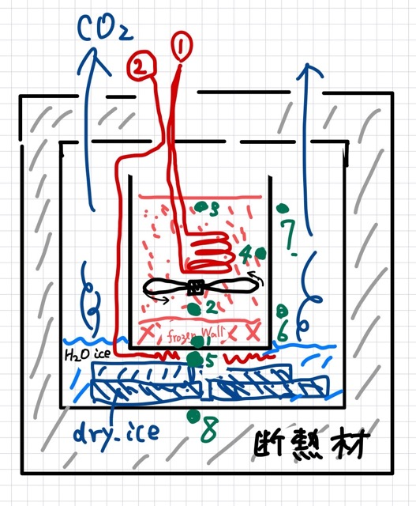

（021） 氷とドライアイスでの実験（その２）¶
(実験ステップ)（案２）¶
{231211} 建設中、建設中、建設中、建設中、
空き缶の底に凍結壁を作る
イメージ図（実験の組み立て）¶
{kind=link}
（設計・計算）（その３）¶
コールドトラップとしての熱交換器
表面にいろいろ貯まる。
伝熱管の表面に、凍結壁を用意して、その表面温度を凝固点とすると、
流れがあるので、凝固点近傍の、固液界面は 過冷却になる
層流の部分は、温度としては過冷却になって、循環していることになる、 したがって、おちる（液中から固体になって表面に付着する）ものは、どんどん落ちていく、 いろいろなものがこびりつく。
コールドトラップの技術を学ぶ
トラップしたものを、排出する、その技を手に入れる。
「脱皮」を、定期的に行わないと、すぐに、HEXが詰まってしまう（凍結壁に近い条件でHEXを運転した場合）
(妄想) {231212} 熱交換器としては プレートタイプ で試してみてはどうか。2基とか4基とか偶数作っておいて交互に脱皮を繰り返す
（設計・計算）（その２）¶
具体的な計算
準備中、検討中、準備中、検討中、準備中、検討中、
支配過程を冷却熱流束とする
（雑駁に言うと）ドライアイスで氷の温度（当該液体が固化する温度）をつくるように環境をつくると、零度（固化温度）に（潜熱の効果で）温度を固定できる。
- （設計方針）
「温度分布が先にありき」で、温度分布が決まると、熱流束が決まって、ドライアイスの消費速度（冷却で捨てられる熱流束）が決まる
- （結論）{231211}
凍結壁の凍結温度から、要求される位置と温度が与えられる。
- 上記で
温度分布が決められて、
熱抵抗が明確になって、
熱流束が求められて、
設計が終了する。
ドライアイスの気化速度〜冷却速度
- （OBS!）
ドライアイスの消費速度は、実験系の、熱設計（入熱量など）で決まる
- （状態量その１）
氷点でドライアイスがどの速度で気化するか？
(実験ステップ)（案１）¶
{231210}
-
- ステップ１、外側からの冷却で凍結を開始する、
側壁の壁面から固化が開始される
（同心円状に、外から内へ、固化が進行すると推定） 観察したうえで、どうするか判断する
- ステップ２、中心の加熱を開始し、凍結の進行を止める
加熱（投入熱量の速度）を 調節する（（設計・計算）（その１）（冷却力、その１））
- ステップ３，凍結壁の厚さを一定に保つ
凍結壁の厚さを一定にする制御プログラムの調整をはじめる。（設計（可能かどうか不明））
（設計・計算）（その１）¶
- 空き缶の外側をドライアイスで冷却する。
外形20cm（プラスチック、バケツの内径）, 内径11cm（炉心模擬、空の缶の外形）
高さ 7cm（水位）
水の全体体積 Vwater=Vw ((3.14)*(11/2)**2) * 7 = 663.8375、〜 Vw=664cc
- 固化熱量空き缶の（H2O）全体を凍らせる熱量はいくらか？
比熱（1℃の温度上昇）= 4.19J/cc として、1℃の温度上昇=(4.19*Vw)J
- 室温 15℃を 0℃に落とすまでにひつような熱量は、
15* (4.19*Vw) = 15*4.19*664 = 44227 〜 44KJ となる。
- 固化させるには、
- 氷（H2O）/液化潜熱は、333.36KJ/Kg （ドライアイスの 約1/3 の冷却能力） ゆえ、
全体を凍らせるには、重量が Vw(gram)だから、
333.36KJ * (Vw/1000) = 333.36*(664/1000) KJ = 221.47 〜 221KJ
- （結論（その１））ゆえに、液相での０℃への温度低下と固化に必要な熱量は
221+44 = 265KJ
- ドライアイス 3Kg を購入、3Kgで冷やせる熱量はいくらか？
CO2潜熱 = 369.94kJ/kg at 大気圧、昇華潜熱:
そのまま
3Kgとすると、1,109.82 〜 1110KJ (3Kg Dry_Ice)となる
- （結論（その２））
1110KJ
- （結論（その３）
3Kgのドライアイスで、空き缶に入れた水を十分凍結させることができる（約４倍の余裕）。
{kind=link}